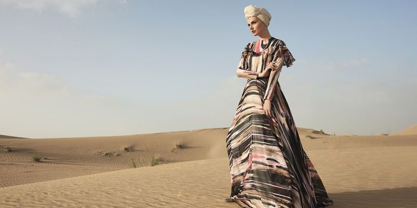

|  |
|---|
| place |
|---|
| Pemasaran produk melalui web Instagram, ecommerce seperti shopee dan tokopedia.Karena menurut kami lebih efektif dan mendekati target market. | product |
| JOLLIE merupakan salah satu bisnis fesyen dibidang modest wear yang mengusung konsep konten lokal budaya Indonesia yaitu batik jumput yang dikombinasikan dengan gaya kontemporer dan menggunakan material yang ramah lingkungan serta menggunakan detail beading. | Promotion |
| Metode promosi kita yaitu dengan memberikan diskon dihari-hari besar, seperti lebaran idul fitri, idul adha, hari kemerdekaan, hari pahlawan dan hari kartini Selain itu akan ada diskon 5-10% dihari jumat yang akan kami beri nama AL-KAHF DAY DISCOUNT | Price |
| Kisaran harga produk kami yaitu Rp. 500.000 hingga Rp. 1000.000karena kami menggunakan material yang ramah lingkungan yaitu semi woll, linen dan viscoseTeknik yang kami pakai adalah jumputan, pleats dan beading yang dibuat secara manualtentunya membutuhkan waktu yang tidak singkat dalam proses pembuatannya |